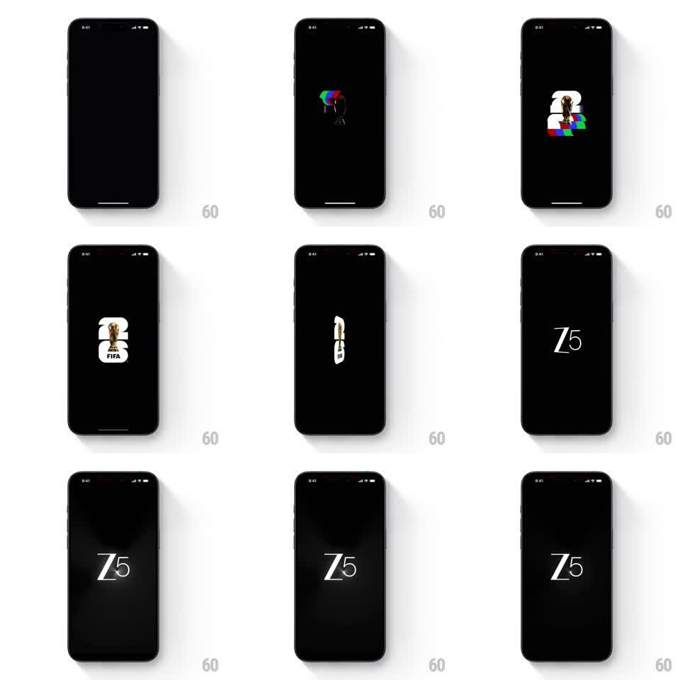

Media
Frame-by-frame

Rebuild this animation 1:1: ZEE5's splash screen - a glitch-assembled FIFA World Cup trophy badge spins on a white rounded square, then flips in 3D and morphs into the Z5 wordmark settling under a soft spotlight.

Rebuild this animation 1:1: ZEE5's splash screen - a glitch-assembled FIFA World Cup trophy badge spins on a white rounded square, then flips in 3D and morphs into the Z5 wordmark settling under a soft spotlight. ## Integration Integration: stack-agnostic spec - springs given as stiffness/damping, timed motions as duration + curve; map every value to your framework and animation library of choice. ## Scene Full-screen black splash. Center stage holds a small emblem (~25% of screen width) that cycles through three identities: RGB-split glitch fragments, the FIFA World Cup trophy mark on a white rounded-square card, and the final "Z5" serif wordmark. ## Motion spec Pattern: one-shot logo morph - glitch assemble, 3D card flip, wordmark resolve. - Glitch phase: logo fragments snap in with RGB channel splits (red/green/blue offsets of 4-8px), 3-4 hard cuts at 80-120ms intervals, no easing. - Badge phase: the white rounded-square card with the trophy mark appears (scale 0.8 -> 1, 250ms, ease-out) and begins a slow Y-axis spin. - Flip: the card rotates 90deg on Y (400ms, ease-in), edge-on at the midpoint, and the Z5 wordmark rotates in from -90deg on the same axis (400ms, ease-out) - a single continuous 3D flip. - Resolve: Z5 holds center as a radial spotlight fades in behind it (opacity 0 -> 1, 600ms) and a faint glow pulses once. ## Calibration - The glitch cuts must feel digital and abrupt; do not ease them. - The flip reads as one object turning, not two logos crossfading - keep the shared rotation axis. ## Reduced motion Skip the glitch and flip: crossfade FIFA badge to Z5 wordmark (250ms), spotlight fade stays. ## Don't miss - The background stays pure black throughout; all light comes from the emblem and its spotlight. - The white FIFA card is the only non-black surface - it carries the flip's midpoint.